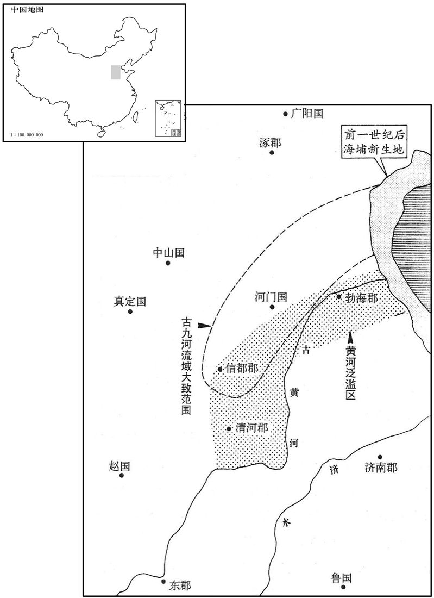
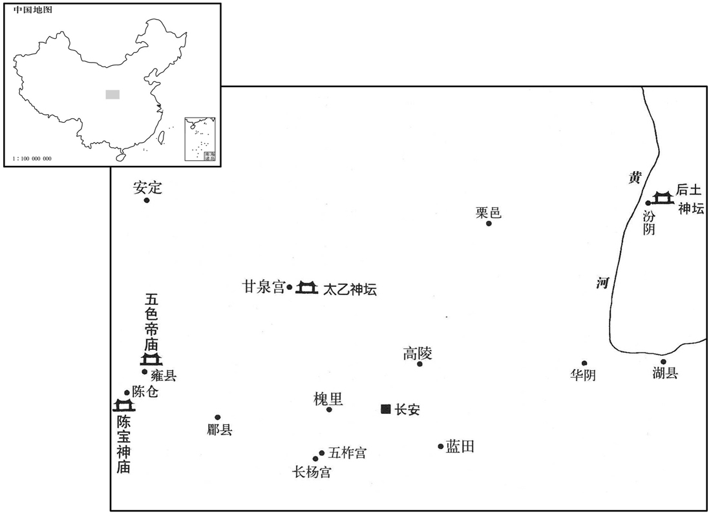
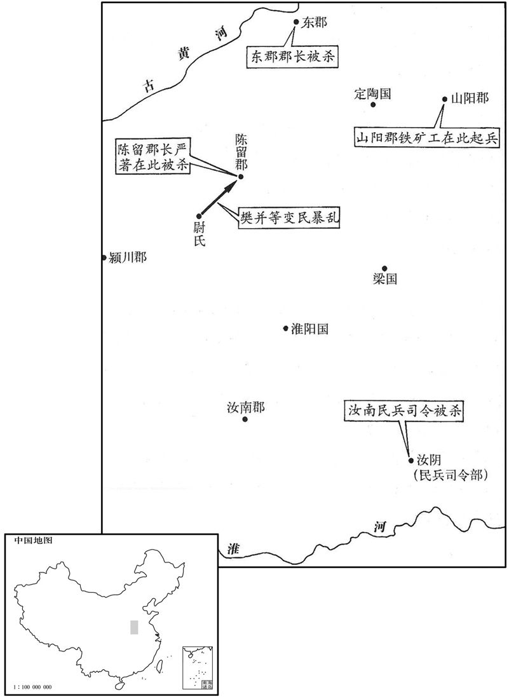

卷次与人物目录 / 卷31
资治通鉴 · 卷第三十一【汉纪二十三】
公元前22年至公元前14年 · 原文、白话与胡三省注
本页按胡注本编排保存全卷内容。白话采用本站所据译本，未可靠对应的内容另列说明；事件标题用于定位，并非原书文字。
本卷共76段原文，41段有译文对应，35段缺译或待核对。
卷第三十一【汉纪二十三】起屠维大渊献（己亥），尽强圉协洽（丁未），凡九年。
卷首原文与注释
孝成皇帝上之下
公元前22年 · 汉孝成皇帝阳朔三年
阳朔三年〔（己亥、前二二）〕
春，三月，壬戌，陨石东郡八。
春季，三月，壬戌（疑误），东郡坠落八块陨石。
夏，六月，颍川铁官徒申屠圣等百八十人杀长吏，盗库兵，自称将军，经历九郡。遣丞相长史、御史中丞逐捕，以军兴从事，〔长，知两翻。师古曰：逐捕之事，须有发兴，皆依军法。〕皆伏辜。
夏季，六月，颖川铁官徒申屠圣等一百八十人，杀官员，盗取军械库兵器，自称“将军”，经历九个郡。成帝派遣丞相长史、御史中丞追捕，按战时征调军队的有关规定行事。申屠圣等全部伏诛。
秋，王凤疾，天子数自临问，〔数，所角翻。〕亲执其手涕泣曰：「将军病，如有不可言，〔师古曰：不可言，谓死也，不欲斥言之。〕平阿侯谭次将军矣！」凤顿首泣曰：「谭等虽与臣至亲，行皆奢僭，〔行，下孟翻。〕无以率导百姓，不如御史大夫音谨敕，〔敕，整也，正也，固也，理也。〕臣敢以死保之！」及凤且死，上疏谢上，复固荐音自代，〔复，扶又翻。〕言谭等五人必不可用；天子然之。初，谭倨，不肯事凤，〔师古曰：倨，慢也。〕而音敬凤，卑恭如子，故凤荐之。八月，丁巳，凤薨。九月，甲子，以王音为大司马、车骑将军，而王谭位特进，领城门兵。〔长安十二城门皆有屯兵。〕安定太守谷永以谭失职，劝谭辞让，不受城门职；由是谭、音相与不平。
秋季，王凤患病，成帝数次亲临探望，并亲自握着王凤的手流泪说：“将军染病，如有意外，我想让平阿侯王谭接替大将军！”王凤叩头哭泣说：“王谭等虽与我是至亲，但他们行事追求奢侈，超越本份，无法统率百姓，不如御史大夫王音谨慎小心，行事走正道。我敢用生命保举他！”及至王凤将死时，上书感谢皇恩，再次坚决推荐王音接替自己，说王谭等五人必不可用。成帝同意了。早先，王谭倨傲，不肯奉迎王凤。而王音则对王凤礼敬有加，卑恭如子，所以王凤保举他。八月，丁巳（二十四日），王凤去世。九月，甲子（初二），任命王音为大司马、车骑将军。赐王谭为特进，主管城门兵。安定太守谷永，因为王谭没有得到大将军的职位，劝他辞让，不接受主管城门的职务。自此王谭、王音互相不满，结下怨恨。
冬，十一月，丁卯，光禄勋于永为御史大夫。永，定国之子也。
冬季，十一月，丁卯（初六），任命光禄勋于永为御史大夫。于永是于定国的儿子。
公元前21年 · 汉孝成皇帝阳朔四年
四年〔（庚子、前二一）〕
春，二月，赦天下。
春季，二月，大赦天下。
夏，四月，雨雪。〔雨，于具翻。〕
夏季，四月，降雪。
少府王骏为京兆尹。骏，吉之子也。先是，京兆有赵广汉、张敞、王尊、王章，至骏，皆有能名，故京师称曰：「前有赵、张，后有三王。」〔赵广汉、张敞，宣帝时尹京。三王，皆帝所用。史言尹京者难其材。先，悉荐翻。〕
任命少府王骏为京兆尹。王骏是王吉的儿子。先前，担任过京兆尹的有赵广汉、张敞、王尊、王章，到王骏，全都以才干出名，因而京师人称赞说：“前有赵、张，后有三王。”
闰月，壬戌、于永卒。
闰十二月，壬戌（初七），于永去世。
乌孙小昆弥乌就屠死，子拊离代立；〔师古曰：拊，读与抚同。〕为弟日贰所杀。汉遣使者立拊离子安日为小昆弥。日贰亡阻康居；〔亡奔康居，依阻其远以自全。〕安日使贵人姑莫匿等三人诈亡从日贰，刺杀之。〔师古曰：诈畔亡而投之，因得以刺杀。刺，七亦翻。〕于是西域诸国上书，愿复得前都护段会宗；〔会宗前为西域都护，终更而还。复，扶又翻。〕上从之。城郭诸国闻之，皆翕然亲附。
乌孙王国小昆弥乌就屠去世，他的儿子拊离接替小昆弥，拊离又被弟弟日贰杀死。汉朝派遣使者扶立拊离的儿子安日为小昆弥。日贰逃亡到康居王国，以阻止安日的追杀。安日指使贵族姑莫匿等三人，诈作反叛逃亡，追随日贰，将他刺杀。于是西域诸国纷纷上书，要求仍派原先的都护段会宗担任西域都护。成帝答应了他们的要求。西域诸城邦王国听到消息，都一致亲近归附汉朝。
谷永奏言：「圣王不以名誉加于实效；御史大夫任重职大，少府宣达于从政，唯陛下留神考察！」上然之。
谷永上奏说：“圣明的君王用人时，不仅注意声誉，更重要的是考察办事的实际能力和效果。御史大夫责任重大，我看少府薛宣，处理政事通达干练，请陛下对他留意考察！”成帝同意了。
译本中未与胡注本可靠对应的内容
以下另列供核对版本差异，不并入胡注本正文。
译本所附古文
[3]秋，九月，壬申，东平思王宇薨。
译本白话
秋季，九月，壬申（十六日），东平王刘宇去世。
公元前20年 · 汉孝成皇帝鸿嘉元年
鸿嘉元年〔（辛丑，前二〇）〕
上传原文的注释括号有异常，字符原样保留；无法可靠划分的段落默认全文显示。
本年事件索引（现代整理）
春，正月，癸巳，以薛宣为御史大夫。〔用谷永之言也。〕
春季，正月，癸巳（初九），任命薛宣为御史大夫。
二月，壬午，上行幸初陵，赦作徒；〔师古曰：徒人之在陵役作者。〕以新丰之戏乡为昌陵县，〔师古曰：戏水之乡也。戏，音许宜翻。〕奉初陵。
二月，壬午（二十八日），成帝前往自己的陵墓初陵，赦免在墓园作工的刑徒。把新丰的戏乡改为昌陵县，以供奉初陵。

上始为微行，〔张晏曰：出入市里，不复警跸，若微贱者之所为，故曰微行。〕从期门郎或私奴十余人，或乘小车，或皆骑，〔骑，奇寄翻。〕出入市里郊野，远至旁县〔旁县，诸县环长安旁者也。〕甘泉、长杨、五柞，〔柞，才各翻。〕鸡、走马，常自称富平侯家人。富平侯者，张安世四世孙放也。放父临，尚敬武公主，〔文颖曰：公主，成帝姊也。臣瓒曰：敬武公主是元帝姊也。师古曰：二说皆非也。薛宣传云：主怒曰：「嫂何以取妹杀之！」既谓元后为嫂，是即元帝妹也。地理志，巨鹿郡有敬武县。〕生放，放为侍中、中郎将，娶许皇后女弟，当时宠幸无比，故假称之。
成帝开始微服出行，跟随的期门郎或私奴有十余人，或乘小车，或全部骑马，出入市内街巷和郊野，远到邻县的甘泉、长杨、五柞，斗鸡走马，成帝还常自称是富平侯家人。所谓富平侯，是张安世的四世孙张放。张放的父亲张临，娶敬武公主为妻，生下张放。张放为侍中、中郎将，娶许皇后的妹妹为妻，当时所受荣宠，没有可以比得上的。因此成帝假称自己是富平侯家人。
三月，庚戌，张禹以老病罢，以列侯朝朔、望，位特进，见礼如丞相；〔朝，直遥翻。〕赏赐前后数千万。
三月，庚戌（二十七日），张禹因年老多病免官，以列侯的身分，在每月一日、十五日朝见皇帝，并加位特进，朝见时的礼节一如丞相，前后赏赐数千万钱。
夏，四月，庚辰，薛宣为丞相，封高阳侯；〔恩泽侯表，高阳侯食邑于东莞。〕京兆尹王骏为御史大夫。
夏季，四月，庚辰（二十七日），任命薛宣为丞相，封高阳侯。任命京兆尹王骏为御史大夫。
王音既以从舅越亲用事，小心亲职。〔从，才用翻。〕上以音自御史大夫入为将军，〔将军，中朝官，故曰入，不获宰相之封，〔自公孙弘以来，为相者封侯。〕六月，乙巳，封音为安阳侯。〔地理志，汝南郡有安阳侯国。〕
王音既然以堂舅的身份，超过其他亲舅得到重用，因而小心供职。成帝因王音是从御史大夫直接擢升为将军，没有得到宰相应当封的爵位。六月，乙巳（疑误），封王音为安阳侯。
冬，黄龙见真定。〔见，贤遍翻。〕
冬季，真定发现黄龙。
是岁，匈奴复株累单于死，弟且麋〔【章十四行本「麋」作「糜」；乙十一行本同；孔本同。】〕胥立，为搜谐若鞮单于；遣子左祝都韩王呴留斯侯入侍，以且莫车为左贤王。〔累，力追翻。单，音蝉。且，子余翻。鞮，丁兮翻。「呴」，汉书作「朐」；师古曰：音许于翻。〕
本年，匈奴复株累单于去世，弟弟且麋胥继位，为搜谐若单于。单于派遣儿子左祝都韩王留斯侯到长安，作为人质侍奉汉皇。单于又任命且莫车为左贤王。
公元前19年 · 汉孝成皇帝鸿嘉二年
二年〔（壬寅、前一九）〕
上传原文的注释括号有异常，字符原样保留；无法可靠划分的段落默认全文显示。
本年事件索引（现代整理）
春，上行幸云阳、甘泉。〔甘泉宫在云阳县。〕
春季，成帝前往云阳、甘泉。
三月，博士行大射礼。〔古者天子、诸侯、大夫、士皆有大射之礼。博士所行，士之射礼也。〕有飞雉集于庭，历阶登堂而雊；〔师古曰：历阶，谓以次而登也。雊，古豆翻。〕后雉又集太常、宗正、丞相、御史大夫、车骑将军之府，又集未央宫承明殿屋上。车骑将军音、待诏宠等上言：〔师古曰：以经术待诏，其人名宠，不记姓也。「天地之气，以类相应；谴告人君，甚微而着。雉者听察，先闻雷声，故月令以纪气。〔师古曰：谓季冬之月雉雊、鸡乳。〕经载高宗雊雉之异，以明转祸为福之验。〔师古曰：高宗祭成汤，有飞雉升鼎耳而雊，祖己曰：「惟先假王正厥事」。故能攘妖而致百年之寿。〕今雉以博士行礼之日〔【章：乙十一行本「日」下有「大众聚会，飞集于庭」八字，孔本同；张校同；退斋校同。】〕历阶登堂，万众睢睢，〔师古曰：睢睢，仰目视貌，音呼惟翻。〕惊怪连日，径历三公之府，太常、宗正典宗庙骨肉之官，然后入宫，其宿留告晓人，具备深切；〔师古曰：宿，音先就翻。留，音力救翻。〕虽人道相戒，何以过是！」后帝使中常侍闳诏音曰：〔，古朝字。〕「闻捕得雉，毛羽颇摧折，类拘执者，得无人为之﹖」〔师古曰：言人放此雉，故欲为变异者。折，而设翻。〕音复对曰：「陛下安得亡国之语！不知谁主为佞之计，诬乱圣德如此者！左右阿谀甚众，不待臣音复而足。〔复，扶又翻。，古谄字。师古曰：足，益也，音子喻翻。足其不足曰足。〕公卿以下，保位自守，莫有正言。如令陛下觉寤，惧大祸且至身，深责臣下，绳以圣法，臣音当先诛，岂有以自解哉！今即位十五年，继嗣不立，日日驾车而出，失行流闻；〔行，所行也。言帝所行多非道，过失流布，闻于远方也。行，下孟翻。〕海内传之，甚于京师。外有微行之害，内有疾病之忧，皇天数见灾异，欲人变更，〔数，所角翻。见，贤遍翻。更，工衡翻；下同。〕终已不改。天尚不能感动陛下，臣子何望！独有极言待死，命在朝暮而已。如有不然，老母安得处所，尚何皇太后之有！高祖天下当以谁属乎！〔如淳曰：老母，音之老母也，当随己受罪诛也。又谓己言深切，触牾人主，积恚而犯必行之诛，不能复顾太后也。师古曰：如说非也。此言总属于成帝耳。不然者，谓不如所谏而自修改也。老母，即帝之母太后也。言帝不自修改，国家危亡，太后不知处所，高祖天下无所付属也。属，音之欲翻。〕宜谋于贤智，克己复礼，〔用论语孔子答颜渊之言。〕以求天意，继嗣可立，灾变尚可销也。」
两版字句有差异，建议核对原文。
三月，博士举行大射礼时。有野鸡飞来，群集于庭院，经过台阶登上大堂鸣叫。而后，又飞集于太常、宗正、丞相、御史大夫、车骑将军官府，接着，又飞集于未央宫承明殿的屋顶上。车骑将军王音、待诏宠等上奏说：“天地之气，以类别互相呼应验证，向君王示警的变异，虽然甚为微小，但很显著。野鸡听觉敏锐，能最先听到雷声，因而《月令》用野鸡的鸣叫来记录节气。《书经》记载：高宗武丁祭成汤时，曾出现野鸡飞到鼎耳上鸣叫的不祥异象，而高宗坚守正道，从而消弭了灾祸，这是转祸为福的明显验证。而今，野鸡在博士举行典礼之日，经过台阶登堂，在万人瞩目之下，引起连日的惊怪，一直飞过三公之府，飞过太常、宗正等主持宗庙祭典和皇族事务的官署，然后入宫。野鸡的停留所告诫人们的内容，是深刻而切要的。虽然人们之间也常常互相告诫，但哪里能赶上这个呢！”而后，成帝派中常侍晁闳传诏询问王音说：“听说捕捉到的野鸡，很多羽毛都折断了，好象曾被抓住关过，莫非有人故意制造变异？”王音回答说：“陛下怎能说这种亡国的话！不知谁敢主谋策划这种奸巧的计策，诬蔑扰乱圣德到如此地步！圣上左右善阿谀的大有人在，不必等我王音再逢迎也已足够。公卿及以下，为保官位，人人自守，不敢说出一句正直的话。如果能让陛下觉悟，惧怕大祸就要降到身上，从而深责臣下，绳之以法，我王音会首先伏诛，岂有自我解脱的道理！陛下即位已十五年，没有继承皇位的嗣子，却天天驾车出游，干些有失德行的不道之举，在社会上流传，海内的传闻，更甚于京师。陛下外有微服出游的毛病，内有疾病缠身的忧愁，上天屡次降下灾异，希望人能改正过失，然而终至不改。上天尚且不能感动陛下，臣子又能企盼什么呢！只有直言极谏，等候处死，命在旦夕间而已。如有不测，我的老母都没有安生的地方，更何况皇太后，就更没有安全的处所了。到那时，高祖的天下该当托嘱给谁呢？陛下应当与贤能智慧之人磋商，象孔子所说那样，克制个人的俗望，恢复以礼治国的正道，以求天意保佑，太子降生，灾害变异也才会消失。”
初，元帝俭约，渭陵不复徙民起邑；〔事见二十九卷元帝永光四年。复，扶又翻。〕帝起初陵，〔即延陵也。〕数年后，乐霸陵曲亭南，更营之。〔即新丰戏乡之地。关中记：昌陵，在霸城东二十里。乐，音洛。〕将作大匠解万年〔解，户买翻，姓也。姓谱：自晋唐叔虞食邑于解，今解县也。晋有解狐、解扬。〕使陈汤为奏，请为初陵徙民起邑，欲自以为功，求重赏。汤因自请先徙，冀得美田宅。上从其言，果起昌陵邑。〔为万年、汤得罪罢昌陵张本。〕
当初，汉元帝十分俭省节约，他的陵墓渭陵，不再让居民迁来，建立县邑。而成帝建筑他的初陵，经营数年后，又看上霸陵曲亭以南，就更改地点，重新营建。将作大匠解万年，让陈汤替他上奏，请求为成帝新建陵墓迁移居民，建立县邑，想以此为自己邀功，求得重赏。陈汤因而请求准许他最先搬迁，希图分到肥沃的田地和美好的住宅。皇上听从他们的建议，果然设立了昌陵邑。
夏，徙郡国豪桀赀五百万以上五千户于昌陵。
夏季，下令迁移郡国豪族资产在五百万以上的五千户，充实昌陵地区。
五月，癸未，陨石于杜邮三。
五月，癸未（初六），杜邮坠落三颗陨石。
六月，立中山宪王孙云客为广德王。〔中山宪王福，靖王胜之玄孙也。地节元年，福薨，子怀王修嗣。五凤三年，修薨，无后。今立云客。〕
六月，封中山宪王的孙子刘云客为广德王。
是岁，城阳哀王云薨；无子，国除。〔城阳景王章传国十世，至云。〕
本年，城阳王刘云去世，由于没有儿子，封国撤除。
公元前18年 · 汉孝成皇帝鸿嘉三年
三年〔（癸卯、前一八）〕
本年事件索引（现代整理）
夏，四月，赦天下。
夏季，四月，大赦天下。
大旱。
大旱。
王氏五侯争以奢侈相尚。成都侯商尝病，欲避暑，从上借明光宫。〔师古曰：黄图云：明光宫，在城内，近桂宫。〕后又穿长安城，引内沣水，〔地理志：丰水出鄠县东南，北流过上林苑，入渭。〕注第中大陂以行船，立羽盖，〔羽盖，编羽为之。〕张周帷，〔周帷，船之四周皆张帷。〕楫棹越歌。〔师古曰：楫、棹，皆所以行船也；令执楫棹人为越歌也。楫，谓棹之短者也，今吴、越之人谓之桡，音饶。越歌，为越之歌。〕上幸商第，见穿城引水，意恨，内衔之，未言。后微行出，过曲阳侯第，又见园中土山、渐台，象白虎殿，起土山、渐台，又为室屋象白虎殿也。于是上怒，以让车骑将军音。商、根兄弟欲自黥、劓以谢太后。〔劓，鱼器翻，又牛例翻。〕上闻之，大怒，乃使尚书责问司隶校尉、京兆尹，知成都侯商等奢僭不轨，藏匿奸猾，皆阿纵，不举奏正法；二人顿首省户下。〔司隶校尉察三辅，京兆尹治京邑，而阿纵不举奏，故责之。省户，禁门也。〕又赐车骑将军音策书曰：「外家何甘乐祸败！〔师古曰：言此罪过，并身自为之。余谓言商等奢僭，必将得罪，何乃甘心为之以为乐也！乐，音洛。〕而欲自黥、劓，相戮辱于太后前，伤慈母之心，以危乱国家！外家宗族强，上一身寖弱日久，今将一施之，〔师古曰：行刑罚。〕君其召诸侯，令待府舍！」〔诸侯，指商、根等。师古曰：令总集音舍待诏命。〕是日，诏尚书奏文帝诛将军薄昭故事。〔见十四卷文帝前十年。〕车骑将军音藉请罪，〔师古曰：自坐上，言待刑戮也。〕商、立、根皆负斧质谢，良久乃已。上特欲恐之，实无意诛也。
王氏五侯竞相崇尚奢华。成都侯王商曾得病，想找个避暑的地方，就向皇上借用明光宫。后来，他又凿穿长安城墙，引来沣水，注入他家宅第中的大水池，使可以行船取乐。游船上树立羽毛华盖，四周全都张挂帷幔，还命令划船的人唱越歌。有一次，成帝到王商的府第，看见池水是穿城挖渠引来的，十分恼怒，但只含恨隐忍，没有说话。后来，成帝微服出行时，经过曲阳侯府第，看见园中修筑土山、渐台，模仿白虎殿，于是成帝大怒，用五侯僭越的罪行指责车骑将军王音。王商、王根兄弟十分恐慌，就想用在自己脸上刺字割鼻的办法，向太后谢罪。成帝听说后，更加怒不可遏，就派尚书去责问司隶校尉和京兆尹；明知成都侯王商等奢侈、僭越等种种不轨行为，甚至窝藏坏人，却都阿谀纵容，不举奏揭发，将他们绳之以法。司隶校尉和京兆尹两人在禁宫门外叩头请罪。成帝又给车骑将军王音下策书说：“外戚为什么自己甘愿犯罪从而败落呢？竟然打算给自己刺面割鼻，在太后面前摆出一副受戮辱的样子，大伤太后的慈母之心，从而危害搅乱国家。外戚宗族势力过强，朕在他们的包围熏染下，很长一段时间都软弱无所作为，今天我要对他们一一处罚。你立即把王商等人召到你那里，等待处理！”这天，成帝还诏令尚书，奏报汉文帝诛杀将军薄昭的旧事。车骑将军王音坐在草垫子上，请罪待刑。王商、王立、王根都背负刀斧和砧板，表示谢罪待刑。过了很久，此事才平息。成帝不过是要恐吓他们，实在并没有诛杀他们的意思。
秋，八月，乙卯，孝景庙北阙灾。
秋季，八月，乙卯（十五日），孝景帝祭庙北门失火。
初，许皇后与班倢呓皆有宠于上。上尝游后庭，欲与倢呓同辇载，〔倢呓，音接于；下同。〕倢呓辞曰：「观古图画，贤圣之君皆〔【章：十四行本「皆」下有「有」字；乙十一行本同；孔本同。】〕名臣在侧，三代末主乃有嬖妾；今欲同辇，得无近之乎！」〔师古曰：嬖，爱也，音必计翻，又卑义翻。近，音巨靳翻。〕上善其言而止。太后闻之，喜曰：「古有樊姬，〔张晏曰：楚王好田，樊姬为不食禽兽之肉。按樊姬事楚庄王。〕今有班倢呓！」班倢呓进侍者李平得幸，亦为倢呓，赐姓曰卫。
最初，许皇后与班都受成帝宠爱。有一次，成帝在后宫庭院游玩，想跟班同乘一辆车，班推辞说：“我观看古代的图画，圣贤的君王身旁，都跟随着名臣，而三代末世的君王身旁，才有宠妾。现在陛下想让我同车，是不是有些相似呢！”成帝对她的回答很赞赏，也就不再勉强。太后听说了，高兴地说：“古代有樊姬，今天有班！”班把侍者李平进献成帝，李平受到宠幸，也被封为，赐姓“卫”。
其后，上微行过阳阿主家，〔师古曰：阳阿，平原之县也。应劭曰：平原漯阴东南五十里，有阳阿乡，故县也。考异曰：五行志作「河阳主」，伶玄赵后外传及荀纪亦作「河阳」。外戚传颜师古注曰：阳阿，平原之县也。今俗书「阿」字作「河」，或为「河阳」，皆后人所妄改耳。今从之。〕悦歌舞者赵飞燕，〔师古曰：以其体轻，故曰飞燕。〕召入宫，大幸；有女弟，复召入，〔复，扶又翻。〕姿性尤醲粹，左右见之，皆啧啧嗟赏。〔啧啧，众口称羡而作声也；音侧革翻。〕有宣帝时披香博士淖方成在帝后，〔披香博士，后宫女职也。淖，音女教翻，姓也。〕唾曰：「此祸水也，灭火必矣！」姊、弟俱为倢呓，贵倾后宫。许皇后、班倢呓皆失宠。于是赵飞燕谮告许皇后、班倢呓挟媚道，〔妇人挟媚道者，蛊诅他人，求己亲媚。〕祝诅后宫，詈及主上。〔祝，职救翻。诅，庄助翻。詈，力智翻。〕冬，十一月，甲寅，许后废处昭台宫，〔师古曰：宫在上林苑中。处，昌吕翻。〕后姊谒〔【章：乙十一行本「谒」下有「等」字；孔本同；张校同。】〕皆诛死，亲属归故郡。〔后姊谒，为平安刚侯夫人。许氏，本山阳人也。〕考问班倢呓，倢呓对曰：「妾闻『死生有命，富贵在天。』〔论语载子夏答司马牛之言。〕修正尚未蒙福，为邪欲以何望！使鬼神有知，不受不臣之愬；〔师古曰：祝诅主上，是不臣也。〕如其无知，愬之何益！故不为也。」上善其对，赦之，赐黄金百斤。赵氏姊、弟骄勡，婕呓恐久见危，乃求共养太后于长信宫。〔师古曰：共，音居用翻。养，音弋向翻。宫阁记：长信殿，在长乐宫，太后常居之。〕上许焉。
此后，成帝微服出行，到阳阿公主的家，喜欢上公主家的歌舞女赵飞燕，把她召入宫中，大加宠爱。赵飞燕有个妹妹，也被召入宫，姿容特别美艳，毫无瑕疵。成帝左右的人看见她，都惊叹赞赏。有位汉宣帝时的披香博士淖方成，当时正站在成帝身后，却唾口水说：“这是祸水呀，定会扑灭汉王朝之火！”赵飞燕姐妹俩都被封为，一时尊贵荣宠，压倒后宫。许皇后、班都失宠了。于是赵飞燕向成帝进谗言说，许皇后，班用妖术诅咒后宫得宠的美人，甚至连皇上都骂到了。冬季，十一月，甲寅（十六日），许后被废，迁居昭台宫。许后的姐姐许谒等人全被诛杀，许后的亲属被逐归原郡。审讯班崐时，班回答说：“我听说‘死生有命，富贵在天’。我修行持正，尚且没有享到幸福，如果做邪的事，就更不用想有好结果了。假使鬼神有知，不会听取诅咒主上的恶诉；假使鬼神无知，向鬼神诉说又有什么用呢？所以用妖术诅咒之事，我不会做的。”成帝认为她说的有道理，就赦免了她，并赐黄金百斤。赵氏姐妹骄横妒嫉，班怕时间长了，终为所害，就请求到长信宫侍奉太后。皇上予以批准。
广汉男子郑躬等六十余人攻官寺，篡囚徒，盗库兵；自称山君。〔广汉郡，高帝分蜀郡置，属益州。师古曰：逆取曰篡。风俗通：寺，司也。诸官府所止皆曰寺。〕
广汉男子郑躬等六十余人，攻打官府，劫走囚犯，盗取军械库兵器。郑躬自称山君。
公元前17年 · 汉孝成皇帝鸿嘉四年
四年〔（甲辰、前一七）〕
秋，勃海、清河、信都河水湓溢，〔勃海，唐沧、景州。清河，唐贝州。信都，唐冀州。师古曰：湓，涌也；音普顿翻。〕灌县、邑三十一，败官亭、民舍四万余所。〔败，补迈翻。〕平陵李寻〔【章：乙十一行本「寻」下有「等」字；孔本同。】〕奏言：「议者常欲求索九河故而穿之。今因其自决，可且勿塞，以观水势；〔索，山客翻。塞，悉则翻；下同。〕河欲居之，当稍自成川，跳出沙土。然后顺天心而图之，必有成功，而用财力寡。」于是遂止不塞。朝臣数言百姓可哀，上遣使者处业振赡之。〔师古曰：处业，谓安处之，使得居业。数，所角翻。处昌吕翻。〕
秋季，黄河在勃海、清河、信都泛滥成灾，淹没三十一个县、邑，冲毁官亭、民房四万余所。平陵人李寻上奏说：“讨论治河之策的人，总想寻找九河故道，按照故道挖掘治理。而今趁着黄河自己决口，可以暂时不堵塞缺口，以观察水的走势，要想让黄河有固定的水道，就应当让它自己逐渐形成河川，再沿河川挑出河床的沙土。然后按照上天的意愿加以规划治理，必能取得成功，而且所用财力、人力都可节省。”于是就停下来，不堵塞黄河缺口。朝臣屡次提出灾区百姓处境悲惨，成帝派使者安置赈济灾区百姓。

广汉郑躬党与寖广，犯历四县，众且万人；州郡不能制。冬，以河东都尉赵护为广汉太守，发郡中及蜀郡合三万人击之，或相捕斩除罪；〔师古曰：贼党相捕斩，赦其本罪。〕旬月平。迁护为执金吾，赐黄金百斤。
广汉郑躬的党羽日益增加，势力范围愈来愈广，曾攻击四个县，人众将近万人，州郡也镇压不住。冬季，朝廷任命河东都尉赵护为广汉太守，征发广汉郡及蜀郡兵共三万人，攻击郑躬。有贼人互相捕捉斩杀，官府赦免其罪。不到一个月，叛乱平息。擢升赵护为执金吾，赐黄金百斤。
是岁，平阿安侯王谭薨。上悔废谭使不辅政而薨也，乃复进成都侯商，〔复，扶又翻。〕以特进城门兵，置幕府，得举吏如将军。〔汉制，列将军置幕府，得举吏。〕
这年，平阿侯王谭去世。成帝后悔弃置王谭，使他没有担任辅政大臣就去世了。于是再次任用成都侯王商，让他以特进身份主管城门兵，设置幕府，使他与将军同样有举荐官吏的权力。
魏郡杜邺时为郎，素善车骑将军音，见音前与平阿侯有隙，即说音曰：「夫戚而不见殊，孰能无怨！〔师古曰：戚，近也。殊，谓异于疏也。说，输芮翻。〕昔秦伯有千乘之国而不能容其母弟，〔师古曰：秦景公母弟公子针有宠于其父桓公。景公立，针惧而奔晋。事在昭元年。故经书「秦伯之弟针出奔晋」，传曰：称弟，罪秦伯也。〕春秋讥焉。周、召则不然，〔师古曰：言周公、召公无私怨也。余谓不然者，不为秦伯之为也。召，读曰邵。〕忠以相辅，义以相匡，同己之亲，等己之尊，不以圣德独兼国宠，又不为长专受荣任，分职于陕，并为弼疑，〔师古曰：分职于陕，谓自陕以东周公主之，自陕以西召公主之。陕，即今陕州县也；音式冉翻。而说者妄云分陕是颍川郏县，谬矣。弼疑，谓左辅、右弼、前疑、后丞也。余按字书，陕从两「入」，郏从两「人」，人自不考耳。为，于伪翻。长，知两翻。〕故内无感恨之隙，〔师古曰：感，音胡闇翻。〕外无侵侮之羞，俱享天佑，两荷高名者，盖以此也。〔荷，下可翻。〕窃见成都侯以特进领城门兵，复有诏得举吏如五府，〔丞相，御史及车骑、左、右将军府也。复，扶又翻。〕此明诏所欲必宠也。将军宜承顺圣意，加异往时，每事凡议，必与及之。发于至诚，则孰不说谕！」〔师古曰：言皆出于至诚，彼必和说，无忧乖异也。说，读曰悦。〕音甚嘉其言，由是与成都侯商亲密。二人皆重邺。
魏郡人杜邺，当时官职为郎，他一向与车骑将军王音要好，见王音从前与平阿侯有嫌隙，就劝王音说：“亲人之间不应该疏远，谁能没有点怨恨呢？从前秦景公拥有千乘战车那么强大的国家，却容不下自己的同母胞弟，《春秋》因此而讥刺他。周公、召公则不然，忠心为国而互相辅助，深明大义而互相匡扶。相互间，把对方当作自身一样亲密和尊重。不因自己德高望重，而独享国家的荣宠；又不因自己年长，而专揽所有显要的职务。将国家从陕地划开，分别主持，二人同为天子的左辅右弼。因此内无遗憾怨恨的嫌隙，外无遭受抨击侮辱的羞耻，同享上天的福佑，也同时负有高名的原因，就在于此吧。我看成都侯王商，以特进的身份主管城门兵，皇上还下诏，使他一如五府有举荐官吏的职权。诏书的意思十分明显，说明圣上一定要对他格外宠信。将军应该禀承顺从圣上的旨意，加倍改变过去的作法，每件政事，凡有建议奏章，都必与王商磋商。只要发自内心的至诚，则谁又会不高兴呢！”王音非常赞许他的看法崐，从此与成都侯王商亲密。两人都很看重杜邺。
公元前16年 · 汉孝成皇帝永始元年
永始元年〔（乙巳、前一六）〕
上传原文的注释括号有异常，字符原样保留；无法可靠划分的段落默认全文显示。
本年事件索引（现代整理）
- 凌室与戾后园接连失火
- 赵倢伃立后受阻，刘辅因谏而被捕，群臣请救获减死
- 王莽以谦恭孝谨获封新都侯，渐得朝中声望
- 赵昭仪专宠并构陷许后，宫中无人敢揭其淫乱
- 刘向编撰《列女传》《新序》《说苑》以鉴戒君主
- 昌陵工程耗费民力且难以建成，元帝下诏停工
- 杜业请续封汉初功臣后裔，萧何后人获封酇侯
- 元帝立城阳王刘俚为王
- 太皇太后王氏去世
- 东莱出现黑龙
- 发生日食
- 陈咸任少府，淳于长任水衡都尉
- 再次发生日食
- 王商任大司马、卫将军，王立掌城门兵
- 翟方进任御史大夫
- 谷永请元帝广开言路，使朝臣得以直陈危亡之患
- 谷永以灾异频仍警告元帝沉溺后宫与奢侈将危及社稷
- 谷永揭露后宫干政、掖庭狱枉杀无辜，促元帝纠正弊政
- 谷永斥责元帝频频微服出游、沉湎宴乐，致宫禁失守
- 谷永以昌陵耗费、民生凋敝警告元帝不可竭民力
- 谷永劝元帝改过守道、确立继嗣，以消灾保宗庙
- 元帝因谷永直谏震怒，后悔欲追捕时谷永已离京
- 元帝与近臣宴饮，班伯借纣王屏风讽谏沉湎酒色
- 太后命元帝遣张放归国，元帝屡次不舍而送其出任
- 丞相薛宣被免后，王根举荐王方进继任，孔光任御史大夫
- 元帝巡幸雍地，祭祀五畤
- 陈汤因议论昌陵与元帝微行获罪，被免官徙边
- 淳于长因助赵后立后受封，平当反对而遭贬
- 翟方进借机罢免陈咸、逢信，报复二人曾得陈汤举荐
- 朱博治郡严明有方，升任左冯翊
- 刘向反对废除甘泉、汾阴与雍地旧祠，元帝下诏恢复祭祀
- 谷永劝元帝远离方士与神仙术，元帝采纳
- 樊并等谋反杀太守，义士诛贼获封列侯
- 苏令聚众起事横行十九郡，终被严欣平定
- 梅福追述高祖求贤纳谏之道，劝元帝广开进言之门
- 梅福指出人才决定国家强弱，求贤不可吝于爵赏
- 梅福主张以爵禄奖劝直言贤士，广纳天下之才
- 梅福劝元帝勿重蹈秦朝压制言论、授权于人的覆辙
- 梅福批评朝廷因言获罪，王章被杀已使忠臣不敢进谏
- 梅福请元帝除禁言之法、抑制外戚，避免重蹈吕霍之祸
春，正月，癸丑，太官凌室火。〔师古曰：凌室，藏冰之室。凌，音力证翻，又音陵。〕戊午，戾后园南阙火。〔考异曰：五行志及荀纪二「火」皆作「灾」，今从汉书。〕
春季，正月，癸丑（二十二日），太官冰室发生火灾。戊午（二十七日），戾后陵园南门发生火灾。
上欲立赵倢呓为皇后，皇太后嫌其所出微甚，难之。太后姊子淳于长为侍中，数往来通语东宫；〔数，所角翻。〕岁余，乃得太后指，许之。夏，四月，乙亥，上先封倢呓父临为成阳侯。〔恩泽侯表，成阳侯食邑于汝南新息。〕谏大夫河间刘辅上书，〔汉书：刘辅，河间宗室。〕言：「昔武王、周公，承顺天地以飨鱼、乌之瑞，然犹君臣祗惧，动色相戒。〔今文尚书泰誓曰：白鱼入于王舟；有火复于王屋，流为乌。周公曰：「复哉！复哉！」〕况于季世，不蒙继嗣之福，屡受威怒之异者虖！〔威怒，谓皇天降威震怒也。虖，古乎字。〕虽夙夜自责，改过易行，〔行，下孟翻。〕畏天命，念祖业，妙选有德之世，考卜窈窕之女，〔郑玄曰：考，犹稽也。师古曰：窈窕，幽闲也。〕以承宗庙，顺神祇心，塞天下望，〔塞，悉则翻。〕子孙之祥犹恐晚暮！今乃触情纵欲，倾于卑贱之女，欲以母天下，不畏于天，不愧于人，惑莫大焉！里语曰：『腐木不可以为柱；人婢不可以为主。』〔考异曰：刘辅传云：「腐木不可以为柱；卑人不可以为主。」荀纪「柱」作「珪」，「卑人」作「人婢」。今「柱」从汉书；「人婢」从荀纪。〕天人之所不予，必有祸而无福，市道皆共知之，〔师古曰：市道，市中之道也；一曰市人及行于道路者也。予，读曰与。〕朝廷莫肯壹言。臣窃伤心，不敢不尽死！」书奏，上使侍御史收缚辅，系掖庭秘狱，〔师古曰：汉旧仪：掖庭诏狱，令、丞，宦者为之，主理妇人、女官也。〕群臣莫知其故。于是左将军辛庆忌。右将军廉褒、光禄勋琅邪师丹、太中大夫谷永〔四人皆中朝官。〕俱上书曰：「窃见刘辅前以县令求见，擢为谏大夫，〔辅以襄贲令上书言得失，召见，擢谏大夫。襄贲，东海县也。贲，音肥。〕此其言必有卓诡切至当圣心者，故得拔至于此；旬月之间，收下秘狱。〔下，遐稼翻。〕臣等愚以为辅幸得托公族之亲，在谏臣之列，新从下土来，未知朝廷体，独触忌讳，不足深过。〔过，犹罪也。〕小罪宜隐忍而已，如有大恶，宜暴治理官，与众共之。〔理官，谓廷尉也。师古曰：令众人知其罪状而罚之。暴，显示也。显示其罪，使理官治之。〕今天心未豫，〔张晏曰：豫，悦豫也。〕灾异屡降，水旱迭臻，方当隆宽广问，褒直尽下之时也，而行惨急之诛于谏争之臣，〔争，读曰诤。〕震惊群下，失忠直心。假令辅不坐直言，所坐不着，〔师古曰：着，明也。〕天下不可户晓。〔师古曰：言不可家家晓谕之也。〕同姓近臣，本以言显，其于治亲养忠之义，〔治，直之翻。〕诚不宜幽囚于掖庭狱。公卿以下，见陛下进用辅亟而折伤之暴，人有惧心，精锐销耎，〔师古曰：人人皆惧也。苏林曰：耎，弱也。师古曰：耎，音乃乱翻，又乳兖翻。〕莫敢尽节正言，非所以昭有虞之听，〔师古曰：舜有敢谏之鼓，故言有虞之听也；一曰：谓达四聪也。〕广德美之风！臣等窃深伤之，惟陛下留神省察！」〔省，悉井翻。〕上乃徙辅系共工狱，〔苏林曰：考工也。师古曰：少府之属官，亦有诏狱。共，读与龚同。〕减死罪一等，论为鬼薪。〔应劭曰：取薪给宗庙为鬼薪，三岁刑也。〕
成帝想封赵飞燕为皇后，但皇太后嫌她出身太微贱，从中阻拦。太后姐姐的儿子淳于长任侍中，多次往来于东宫，为成帝传话。经过一年多，才得到太后的旨意，予以允许。夏季，四月，乙亥（十五日），成帝先封赵飞燕的父亲赵临为成阳侯。谏大夫、河间人刘辅上书说：“往昔武王、周公承顺天地，因而有白鱼入王舟、火焰变乌鸦的祥瑞，然而君臣仍然心怀恭敬和恐惧，脸为变色，互相戒勉。何况现在正处末世，没有太子降生的福气，却屡次遭受上天降威震怒的变异呢！虽然日夜自责检讨，改过易行，敬畏天命，思念祖宗大业，精选品德高尚的家族，从中稽考挑选窈窕淑女，以承奉宗庙，顺从神灵之心，满足天下人的希望，然而要想有生子生孙的福气，仍然恐怕太晚！可是陛下现在却放纵情欲，倾心迷恋卑贱之女，想让这样的女子作天下之母，既不畏于天，又不愧于人，陛下的迷惑，没有比现在更大的了！俚语说：‘腐木不可用做梁柱，婢女不可成为主人。’上天和人民都不赞成的事情，必然有祸而无福，这是街市小民和路人都懂得的道理，朝廷却没有人肯说一句话，我为此痛心，不敢不冒死劝谏。”奏章上去后，成帝派侍御史逮捕了刘辅，囚禁在宫廷秘密监狱里。群臣都不知道他被捕的原因。当时左将军辛庆忌、右将军廉褒、光禄勋琅邪人师丹、太中大夫谷永，都上书说：“我们看到刘辅从前以县令的身份求见陛下，被陛下擢升为谏大夫，这说明他的话必具卓异的见识，正好深合圣心，所以才能够被提拔到这样的地位。不到一个月的时间，却突然被逮捕，关押在秘密监狱。我们愚昧地认为，刘辅有幸为皇族宗亲之一，位列谏臣。他新近才从下面的县邑来到，不懂朝廷规矩，独自触犯了陛下的忌讳，不足以深加追究。若是小罪，陛下还是应该隐忍一下；如有大罪，就应公开揭露，让司法官吏去查办，使大家都知道他的罪恶。现在天心不悦，屡降灾异，水旱迭至。正处在应该施恩宽容，广求建议，褒奖直言，使臣下尽言的时候，却对谏诤之臣施以惨痛激烈的处罚，使群臣震惊，丧失尽忠直言之心。假如刘辅不是因直言获罪，罪名又不公布，那么就不能使天下家喻户晓。刘辅是同姓近臣，本因直言而获显达，从管理亲族、培养忠良的意义上说，实在不该把他幽禁在宫廷监狱。公卿及以下官员，见陛下很快地擢升任用刘辅，又迅速加以摧折，人人怀有恐惧之心，精气顿销，锐气减弱，不敢为国尽忠直言了。这就不能显示出陛下具有虞舜倾听直谏的贤德，也不能推广美好的道德风范。我们深深为崐此痛心，希望陛下留意考察！”成帝于是把刘辅转移到共工狱，减免死罪，判处做三年苦工的“鬼薪”徒刑。
初，太后兄弟八人，独弟曼早死，不侯；〔凤嗣父爵阳平侯。崇安成侯庶弟五人，同日封，谓之五侯。八人之中，独曼不侯。〕太后怜之。曼寡妇渠供养东宫，〔供，居用翻。养，余亮翻。〕子莽幼孤，不及等比；师古曰：比，音必寐翻；余谓当音毗至翻。〕其群兄弟皆将军、五侯子，乘时侈靡，〔师古曰：乘，因也，因富贵之时。〕以舆马声色佚游相高。〔师古曰：佚，与逸同。〕莽因折节为恭俭，勤身博学，〔折，而设翻。〕被服如儒生；〔师古曰：被，音皮义翻。〕事母及寡嫂，养孤兄子，行甚敕备；〔莽兄永早死，有子光。行，下孟翻。〕又外交英俊，内事诸父，曲有礼意。大将军凤病，莽侍疾，亲尝药，〔郑玄曰：尝药，度其所堪。〕乱首垢面，不解衣带连月。凤且死，以托太后及帝，拜为黄门郎，〔汉旧仪曰：黄门郎，属黄门令，日暮入对青琐门拜，名曰夕郎。董巴曰：禁门曰黄闼。〕迁射声校尉。久之，叔父成都侯商上书，愿分户邑以封莽。长乐少府戴崇、〔姓谱：戴，宋戴公之后；一曰：宋灭戴，子孙以国为氏。〕侍中金涉、中郎陈汤等皆当世名士，咸为莽言，〔为，于伪翻；下同。〕上由是贤莽，太后又数以为言。〔数，所角翻。〕五月，乙未，封莽为新都侯，〔莽传以南阳新野之都乡为新都侯国。〕迁骑都尉、光禄大夫、侍中。宿卫谨敕，爵位益尊，节操愈谦，散舆马、衣裘振施宾客，〔师古曰：振，举也。施，式智翻。〕家无所余；收赡名士，交结将、相、卿、大夫甚众。故在位者更推荐之，〔更，工衡翻。〕游者为之谈说，虚誉隆洽，倾其诸父矣。〔隆，盛也。洽，渐浃也，周也。〕敢为激发之行，处之不凓恧。〔师古曰：激，急动。恧，愧也。激，音工历翻。行，下孟翻。处，昌吕翻。恧，音女六翻。尝私买侍婢，昆弟或颇闻知，莽因曰：「后将军朱子元无子，〔朱博，字子元。〕莽闻此儿种宜子。」〔【章：十四行本「子」下有「为买之」三字；乙十一行本同；孔本同；张校同；退斋校同。】〕〔师古曰：此儿，谓所买婢也。种，章勇翻。〕即日以婢奉朱博。其匿情求名如此！〔王莽事始此。〕
最初，太后有兄弟八人，唯独弟弟王曼早死，没有封侯。太后怜惜他，把王曼的遗孀渠供养在东宫。王曼的儿子王莽，从小成孤儿，不能与其他人相比。那些兄弟的父亲都是将军、王侯，可以凭父亲当时的地位恣意奢华，在车马声色放荡游乐方面互相竞赛。而王莽是屈己下人，态度谦恭，勤学苦修，学识渊博，穿着像儒生。侍奉母亲跟寡嫂，抚养亡兄的孤儿，十分尽心周到。同时，在外结交的都是些俊杰之士，在内对待诸位伯父叔父，能委曲迁就，礼敬有加。大将军王凤病重时，王莽侍候他，亲口尝药，一连几个月都不能解衣入睡，因而蓬头垢面。王凤将死时，把王莽托付给太后及成帝，王莽因此被封为黄门郎，以后又升任射声校尉。很久以后，叔父成都侯王商上书，表示愿分出自己封地上的土地和百姓，请求皇上封给王莽。长乐少府戴崇、侍中金涉、中郎陈汤等，都是当代名士，也都为王莽美言。成帝因而认为王莽贤能，太后又屡次以此嘱咐成帝。五月，乙未（初六），封王莽为新都侯，升为骑都尉、光禄大夫、侍中。王莽在宫廷服务谨慎尽心，爵位越尊贵，他的礼节操守越谦恭。他把自己的车马、衣物、皮裘周济给门下宾客，而自己却家无余财。他收罗赡养名士，结交很多将、相、卿、大夫。因而在位的官员轮番向皇帝推荐他，善游说的人也为他到处宣传，虚假不实的声誉隆盛无比，压过了他的诸位伯父叔父。他敢于做违俗立异的事情，而又安然处之，毫无愧色。王莽曾私下买了一个婢女，兄弟中有人听说了，王莽于是辩解：“后将军朱子元没有儿子，我听说此女有宜男相。”当天就把婢女奉送给朱博。他就是这样隐匿真情博取名声！
皇后既立，宠少衰；而其女弟绝幸，为昭仪，居昭阳舍，其中庭彤朱而殿上髹漆；〔师古曰：以漆漆物谓之髹，音许求翻，又许昭翻。今关东俗，器物一再着漆者谓之捎漆；捎，即髹声之转重耳。「髹」，字或作「摅」，音义亦与髹同。今关西俗云黑髹盘、朱髹盘，其音如此。两义并通。毛晃曰：髹，赤黑漆。〕切皆铜沓，黄金涂；〔师古曰：切，门限也；音千结翻。沓，冒其头也。涂以金，涂铜上也。沓，音他合翻。〕白玉阶；〔师古曰：阶，所由升殿陛也。〕壁带往往为黄金釭，函蓝田璧、明珠、翠羽饰之；〔服虔曰：釭，壁中之横带也。晋灼曰：以金环饰之也。师古曰：壁带，壁之横木露出如带者也，于壁带之中往往以金为釭，若车釭之形也。其釭中，着玉璧、明珠、翠羽耳。蓝田，山名，出美玉。釭，音工；流俗读之音江，非也。〕自后宫未尝有焉。赵后居别馆，多通侍郎、宫奴多子者。〔侍郎，郎之得出入禁中者。宫奴，有罪没为宫奴，给使宫中者。〕昭仪尝谓帝曰：「妾姊性刚，有如为人构陷，则赵氏无种矣！」〔种，章勇翻。〕因泣下凄恻。帝信之，有白后奸状者，帝辄杀之。由是后公为淫恣，无敢言者，然卒无子。〔卒，子恤翻。〕
赵飞燕当上皇后以后，成帝对她的宠爱稍有衰退。而她的妹妹却受宠空前，被封为昭仪，赐住昭阳舍，居处中庭全用朱红色，而殿上则漆成黑色。门限全用铜包，再涂以黄金。台阶用白玉雕成。屋内墙壁上带状的横木，处处嵌有黄金环，环内镶上蓝田玉璧、明珠、翠羽来装饰。其奢华是后宫从来没有过的。赵皇后居住在另外一个宫殿，跟侍郎和多子的宫奴屡次私通。赵昭仪曾对成帝说：“我姐姐性格刚烈，假如被人构陷，则我们赵氏就要绝种了！”趁势哭得十分凄恻。成帝相信了她的话，有报告皇后奸情的人，成帝就把他杀死。从此，赵皇后公然恣意宣淫，没有人敢报告了，然而始终不生孩子。
光禄大夫刘向以为王教由内及外，自近者始，〔诗大序：关睢，后妃之德也，风之始也，所以风天下而正夫妇也，故曰正始之道，王化之基。〕于是采取诗、书所载贤妃、贞妇兴国显家及孽、嬖乱亡者，〔师古曰：孽，庶也。嬖，爱也。〕序次为列女传，凡八篇，及采传记行事，着新序、说苑，凡五十篇，奏之；数上疏言得失，陈法戒。〔数，所角翻。〕书数十上，以助观览，补遗阙。〔上，时掌翻。〕上虽不能尽用，然内嘉其言，常嗟叹之。
光禄大夫刘向认为，国家的道德风化教育，应该由内及外，先从皇帝身边的人开始。于是摘录《诗经》、《书经》所记载的贤妃、贞妇使国家振兴、家崐族显达的事迹，以及君王因宠爱嫔妃，造成天下大乱、国家灭亡的故事，按次序，编成《列女传》，共八篇；并采录传、记、行事，著《新序》、《说苑》共五十篇。书成，奏请成帝阅览。他还屡次上书，谈论国家政治得失，陈述应当效法或鉴戒的史事。前后上书数十次，想帮助天子观察政事，补救错误和遗漏。成帝对他的建议，虽不能都采用，但内心却很赞同，常感叹不已。
初，解万年自诡昌陵三年可成，卒不能就；〔卒，子恤翻。〕群臣多言其不便者。下有司议，〔下，遐稼翻。〕皆曰：「昌陵因卑为高，度便房犹在平地上；〔汉书音义曰：便房，藏中便坐也。度，徒洛翻。〕客土之中，不保幽冥之灵，浅外不固。〔服虔曰：取他处土以增高，为客土。〕卒徒工庸以巨万数，至然指夜作，取土东山，且与谷同贾，〔师古曰：贾，读曰价。〕作治数年，天下被其劳。〔治，直之翻。被，皮义翻。〕故陵因天性，据真土，处势高敞，旁近祖考，〔初陵近渭陵，又西近茂陵。处，昌吕翻。近，其靳翻。〕前又已有十年功绪，〔师古曰：绪，谓端次也。〕宜还复故陵，勿徙民，便！」秋，七月，诏曰：「朕执德不固，谋不尽下，〔师古曰：言不博谋于群下。〕过听将作大匠万年言『昌陵三年可成』，〔师古曰：过，误也。万年，解万年也。〕作治五年，中陵、司马殿门内尚未加功。〔如淳曰：陵中有司马殿门，如生时制也。臣瓒曰：天子之藏圹中，无司马殿门也。此谓陵上寝殿及司马门也。时皆未作之，故曰尚未加功。师古曰：中陵，陵中正寝也。司马殿门，瓒说是也。〕天下虚耗，百姓罢劳，客土疏恶，〔罢，读曰疲。疏，音捤。〕终不可成，朕惟其难，〔师古曰：惟，思也。〕怛然伤心。〔怛．当割翻；惊也，惧也，悼也，不安也。〕夫『过而不改，是谓过矣』。〔师古曰：论语载孔子之言，故诏引之。〕其罢昌陵，及故陵勿徙吏民，〔罢昌陵，还故陵，而故陵勿起陵邑、徙吏民也。〕令天下毋有动摇之心！」
本段缺少可靠对应白话，原文完整保留；未使用生成译文。
初，酇侯萧何之子〔【章：十四行本「子」下有「孙」字；乙十一行本同；孔本同；张校同。】〕嗣为侯者，无子及有罪，凡五绝祀。高后、文帝、景帝、武帝、宣帝思何之功，辄以其支庶绍封。〔萧何薨，子禄嗣；薨，亡子，高后乃封何夫人同为酇侯，小子延为糂阳侯。孝文元年，罢同，更封延为酇侯；薨，子遗嗣；薨，亡子，文帝复以遗弟则嗣；有罪，免。景帝二年，封则弟嘉为武阳侯；薨，子胜嗣；有罪，免。武帝元狩中，复以酇户二千四百封何曾孙庆为酇侯。庆，则子也；薨，子寿成嗣；坐罪，免。宣帝封何玄孙建世为酇侯。凡五绍封。〕是岁，何七世孙酇侯获坐使奴杀人，减死，完为城旦。〔获，建世孙也。〕先是，上诏有司访求汉初功臣之后，久未省录。杜业说上曰：〔先，悉荐翻。省．悉井翻。说，输芮翻。〕「唐、虞、三代皆封建诸侯，以成太平之美，是燕、齐之祀与周并传，〔太公封于齐，至周安王二十三年，始为田氏所灭。召公封于燕，后周而灭。〕子继弟及，历载不堕。〔师古曰：弟继兄位谓之及。载，子亥翻。堕，毁也；音火规翻。〕岂无刑辟，〔辟，毗亦翻。〕繇祖之竭力，故支庶赖焉。〔师古曰：言国家非无刑辟，而功臣子孙得不陷罪辜而能长存者，思其先人之力，令有嗣续也。〕汉功臣，亦皆剖符世爵，受山、河之誓；〔高帝封爵之誓曰：「使黄河如带，泰山若厉，国以永存，爰及苗裔。」〕百余年间，而袭封者尽，朽骨孤于墓，苗裔流于道，生为愍隶，死为转尸。〔应劭曰：死不能葬，故尸流转在沟壑之中。师古曰：愍隶者，言为徒隶，在可哀愍之中。〕以往况今，〔师古曰：况，譬也。〕甚可悲伤。圣朝怜闵，诏求其后，四方忻忻，靡不归心。出入数年而不省察，恐议者不思大义，徒设虚言，则厚德掩息，吝简布章，〔吝，靳也。简，略也。言既诏求其后，复靳而不封，略而不问，若如此，必布闻于天下也。〕非所以示化劝后也。虽难尽继，宜从尤功。」〔言汉之功臣绝世者多，虽难尽继，宜取功尤重者后，绍其国封也。〕上纳其言。癸卯，封萧何六世孙南疖长喜为酇侯。〔地理志，南疖县属巨鹿郡。孟康曰：疖，音力全翻。百官表：县令、长皆秦官，掌治其县：万户以上为令，秩千石至六百石；减万户为长，秩五百石至三百石。长，知两翻。考异曰：成纪：「元延元年，封萧相国后喜为酇侯。」荀、胡皆用之。按功臣表，「永始元年，厘侯喜绍封；三年薨。永始四年，质侯尊嗣；五年薨，质侯章嗣。」盖本纪误以永始为元延故也。〕
本段缺少可靠对应白话，原文完整保留；未使用生成译文。
本段人物：萧何
立城阳哀王弟俚为王。〔鸿嘉二年，哀王云薨，无后。考异曰：汉纪，「俚」作「悝」，今从汉书。〕
本段缺少可靠对应白话，原文完整保留；未使用生成译文。
八月，丁丑，太皇太后王氏崩。〔师古曰：宣帝王皇后也。〕
本段缺少可靠对应白话，原文完整保留；未使用生成译文。
九月，黑龙见东莱。〔见，贤遍翻。〕
本段缺少可靠对应白话，原文完整保留；未使用生成译文。
丁巳晦，日有食之。〔考异曰：荀纪作「乙巳」，按长历丁巳晦，荀悦误。〕
本段缺少可靠对应白话，原文完整保留；未使用生成译文。
是岁，以南阳太守陈咸为少府，侍中淳于长为水衡都尉。
本段缺少可靠对应白话，原文完整保留；未使用生成译文。
乙酉晦，日有食之。
本段缺少可靠对应白话，原文完整保留；未使用生成译文。
三月，丁酉，以成都侯〔【章：十四行本「侯」下有「王」字；乙十一行本同；孔本同。】〕商为大司马、卫将军；红阳侯王立特进，领城门兵。
本段缺少可靠对应白话，原文完整保留；未使用生成译文。
京兆尹翟方进为御史大夫。〔翟，亭历翻，又直格翻。〕
本段缺少可靠对应白话，原文完整保留；未使用生成译文。
谷永为凉州刺史，奏事京师，讫，当之部，〔凉州部陇西、天水、武都、金城、安定、北地、武威、张掖、敦煌、酒泉等郡。汉制，诸州刺史常以八月巡行所部，录囚徒，考殿最；岁尽，诣京师奏事。〕上使尚书问永，受所欲言。〔师古曰：永有所言，令尚书即受之。〕永对曰：「臣闻王天下，有国家者，〔王，于况翻。〕患在上有危亡之事而危亡之言不得上闻。如使危亡之言辄上闻，〔师古曰：如，若也。有即上闻。〕则商、周不易姓而迭兴，正不变改而更用。〔更，工衡翻。〕夏、商之将亡也，行道之人皆知之；〔师古曰：凡在道路行者也。〕晏然自以若天有日，莫能危，〔尚书大传曰：桀云：天之有日犹吾之有民。日有亡哉﹖日亡，吾亦亡矣。师古曰：自谓如日在天而无有能伤危也。〕是故恶日广而不自知，大命倾而不〔【章：十四行本「不」下有「自」字；乙十一行本同；孔本同；张校同。】〕寤。易曰：『危者有其安者也，亡者保其存者也。』〔师古曰：易下系之辞也。言安必思危，存不忘亡，乃得保其安存。〕陛下诚垂宽明之听，无忌讳之诛，使刍荛之臣得尽所闻于前，〔刈草曰刍，采薪曰荛。文王询于刍荛。〕群臣之上愿，社稷之长福也！
本段缺少可靠对应白话，原文完整保留；未使用生成译文。
元年，九月，黑龙见；〔见，贤遍翻。〕其晦，日有食之。今年二月，己未夜，星陨；乙酉，日有食之。〔「己」，当作「癸」。此承谷永传之误。〕六月之间，大异四发，二二而同月。三代之末，春秋之乱，未尝有也。臣闻三代所以陨社稷，丧宗庙者，皆由妇人与群恶沈湎于酒；〔丧，息浪翻。沈，持林翻。〕秦所以二世、十六年而亡者，〔秦始皇二十六年，初并天下，三十七年，崩，二世三年而亡，其有天下财十六年。〕养生泰奢奉终泰厚也。二者，陛下兼而有之，臣请略陈其效：
本段缺少可靠对应白话，原文完整保留；未使用生成译文。
建始、河平之际，许、班之贵，倾动前朝，〔师古曰：许皇后及班倢呓之家。朝，直遥翻。〕熏灼四方，女宠至极，不可上矣；〔师古曰：上，犹加也。〕今之后起，什倍于前。〔如淳曰：谓赵、李本从微贱起也。〕废先帝法度，听用其言，官秩不当，纵释王诛，〔师古曰：纵，放也。释，解也。王诛，谓王法当诛者。当，丁浪翻。〕骄其亲属，假之威权，从权乱政，〔师古曰：从，音子用翻。横，音胡孟翻。〕刺举之吏，莫敢奉宪。又以掖庭狱大为乱阱，〔师古曰：阱，穿也；为坑阱以拘系人也。乱者，言其非正而又多也。阱，音才性翻。仲冯曰：言设狱陷人如阱耳。余谓仲说是。〕榜棰撸于炮烙，〔师古曰：撸，痛也。炮烙，纣所作刑也。膏涂铜柱，加之火上，令罪人行其上，辄堕炭中；笑而以为乐。撸，音千感翻。〕绝灭人命，主为赵、李报德复怨。〔师古曰：复，亦报也。为，于伪翻。〕反除白罪，建治正吏，〔师古曰：反，读曰幡。罪之明白者，反而除之；吏之公正者，建议劾治也。〕多系无辜，掠立迫恐，〔师古曰：掠，笞服之，立其罪名。〕至为人起责，分利受谢，〔师古曰：言富贾有钱，假托其名，代之为主，放与他人，以取利息而共分之；或受报谢，别取财物。为，于伪翻。〕生入死出者，不可胜数。〔胜，音升。〕是以日食再既，以昭其辜。〔孟康曰：既，尽也。师古曰：昭，明也。〕
本段缺少可靠对应白话，原文完整保留；未使用生成译文。
王者必先自绝，然后天绝之。今陛下弃万乘之至贵，乐家人之贱事，〔师古曰：谓私畜田及奴婢财物。乐，音洛。〕厌高美之尊号，好匹夫之卑字，〔孟康曰：成帝好微行，更作私字以相呼。如淳曰：称张放家人为卑字。好，呼到翻。〕崇聚僄轻无义小人以为私客，〔师古曰：僄，疾也；音频妙翻，又匹妙翻。〕数离深宫之固，〔数，所角翻。离，力智翻。〕挺身晨夜，与群小相随，〔师古曰：挺，引也，音大鼎翻。〕乌集杂会，醉饱吏民之家，〔师古曰：言聚散不常，如乌鸟之集。〕乱服共坐，沈湎媟嫚，溷淆无别，黾勉遁乐，〔师古曰：黾勉，言不息也。遁，流遁也。言流遁为乐也。沈，持林翻。乐，音洛。〕昼夜在路，典门户、奉宿卫之臣执干戈而守空宫，公卿百僚不知陛下所在，积数年矣。
本段缺少可靠对应白话，原文完整保留；未使用生成译文。
王者以民为基，民以财为本，财竭则下畔，下畔则上亡。是以明王爱养基本，不敢穷极，使民如承大祭。〔论语孔子答仲弓之言。师古曰：言常畏慎。〕今陛下轻夺民财，不爱民力，听邪臣之计，去高敞初陵，改作昌陵，役百干溪，费拟骊山，〔楚灵王侈心无厌，民不堪其役，溃于干溪，王缢而死。骊山事见秦纪。师古曰：拟，比也，言劳役之功百倍于楚灵王，费财之广比于秦始皇。杜预曰：干溪，在谯国城父县南。干，音干。〕靡敝天下，〔师古曰：靡，音武皮翻。〕五年不成而后反故。百姓愁恨感天，饥馑仍臻，〔师古曰：仍，频也。〕流散赜食，餧死于道，以百万数。〔师古曰：赜，亦散也。餧，饿也。赜，音人勇翻。餧，音乃贿翻。〕公家无一年之畜，〔师古曰：畜，读曰蓄。〕百姓无旬月〔【章：十四行本「月」作「日」；乙十一行本同；孔本同；张校同。】〕之储，上下俱匮，无以相救。诗云：『殷监不远，在夏后之世。』〔师古曰：大雅荡之诗也。〕愿陛下追观夏、商、周、秦所以失之，以镜考己行，〔师古曰：镜，谓鉴照之。考，校也。行，下孟翻。〕有不合者，臣当伏妄言之诛！〔师古曰：言上所为违于节俭，皆与永言同。余谓此言帝之失行，与夏、殷、周、秦所以失者合耳。〕
本段缺少可靠对应白话，原文完整保留；未使用生成译文。
汉兴九世，百九十余载，〔载，子亥翻。〕继体之主七，皆承天顺道，遵先祖法度，或以中兴，或以治安；〔治，直吏翻。〕至于陛下，独违道纵欲，轻身妄行，当盛壮之隆，无继嗣之福，有危亡之忧，积失君道，不合天意，亦以多矣。为人后嗣，守人功业如此，岂不负哉！方今社稷、宗庙祸福安危之机在于陛下；陛下诚能昭然远寤，专心反道，〔师古曰：反，犹还也。〕旧愆毕改，新德既章，则赫赫大异庶几可销，天命去就庶几可复，〔师古曰：去就，言去离无德而就有德。〕社稷、宗庙庶几可保！唯陛下留神反复，熟省臣言！」
本段缺少可靠对应白话，原文完整保留；未使用生成译文。
帝性宽，好文辞，而溺于宴乐，〔省，悉井翻。好，呼到翻。乐，音洛。〕皆皇太后与诸舅夙夜所常忧；至亲难数言，〔数，所角翻。〕故推永等使因天变而切谏，劝上纳用之。永自知有内应，展意无所依违，〔师古曰：展，申也。〕每言事辄见答礼。〔师古曰：如礼而答之。余谓答礼者、答之而又加礼也。〕至上此对，〔上，时掌翻。〕上大怒。卫将军商密擿永令发去。〔师古曰：擿，谓发动之。〕上使侍御史收永，敕过交道厩者勿追；〔晋灼曰：交道厩，去长安六十里，近延陵。〕御史不及永，还。上意亦解，自悔。〔悔遣侍御史收永也。〕
本段缺少可靠对应白话，原文完整保留；未使用生成译文。
上尝与张放及赵、李诸侍中共宴饮禁中，皆引满举白，〔服虔曰：举满桮，有余白历者罚之也。孟康曰：举白，见验饮酒尽不也。师古曰：谓引取满觞而饮，饮讫，举觞告白尽不也。一说：白者，罚爵之名；饮有不尽者，则以此爵罚之。魏文侯与大夫饮酒，令曰：「不爵者浮以大白。」于是公乘不仁举白浮君，是也。釂，子肖翻；饮酒尽爵也。〕谈笑大噱。〔师古曰：噱，笑声也，音其略翻。或曰，噱，谓唇口之中，大笑则见。此说非。〕时乘舆幄坐张画屏风，〔乘，绳证翻。师古曰：坐，音材卧翻。画，古宾字通；下同。〕画纣醉踞妲己，作长夜之乐。〔妲，当割翻。妲己，有苏氏之女。乐，音洛。〕侍中、光禄大夫班伯久疾所起，〔姓谱：班，楚令尹班之后。班书叙传自以为楚令尹子文之后。子文初生，缒于梦中而虎乳之。楚人谓乳为「谷」，谓虎为「于菟」，故名谷于菟，楚人谓虎「班」，其子以为号。师古注曰：子文之子班亦为楚令尹。余按左传庄三十年，申公班杀令尹子元，谷于菟为令尹，恐班非子文之子。〕上顾指画而问伯曰：「纣为无道，至于是虖﹖」〔虖，古乎字。〕对曰：「书云：『乃用妇人之言』，〔师古曰：今文尚书泰誓之辞。〕何有踞肆于朝！〔师古曰：肆，放也，陈也。朝，直遥翻。〕所谓众恶归之，不如是之甚者也！」〔师古曰：论语称孔子曰：「纣之不善，不如是之甚也！是以君子恶居下流，天下之恶皆归焉」。〕上曰：「苟不若此，此图何戒﹖」对曰：「『沈湎于酒』，微子所以告去也。〔孔颖达曰：酒诰注云：饮酒齐色曰湎。然则湎者，颜色湎然齐一之辞。师古曰：微子，殷之卿士，封于微，爵称子也。殷纣错乱天命，微子作诰，告箕子、比干而去。其诰曰：用沈酗于酒，用乱败厥德于下。我其发出狂，吾家耄逊于荒。事见尚书微子篇。『式号式謼』，大雅所以流连也。〔师古曰：大雅荡之诗曰：式号式謼，俾昼作夜。言醉酒号呼，以昼为夜也。流连，言作诗之人，嗟汉而泣涕流连也。而说者乃以流连为荒亡，盖失之矣。大雅所以流连，不谓饮酒之人也。謼，音火故翻。〕诗、书淫乱之戒，其原皆在于酒！」上乃喟然叹曰：「吾久不见班生，今日复闻谠言！」〔复，扶又翻。师古曰：谠言，善言也。谠，音党。〕放等不怿，〔师古曰：怿，悦也，音亦。〕稍自引起，更衣，〔更，工衡翻。〕因罢出。
本段缺少可靠对应白话，原文完整保留；未使用生成译文。
时长信庭林表适使来，闻见之。〔孟康曰：长信，太后宫名也。庭林表，宫中妇人官名也。师古曰：长信宫庭之林表也。林表，官名耳。庭，非官称也。使，疏吏翻。〕后上朝东宫，〔朝，直遥翻。〕太后泣曰：「帝间颜色瘦黑。〔师古曰：间，谓比日也。〕班侍中本大将军所举，〔大将军，谓王凤也。〕宜宠异之；益求其比，以辅圣德！〔凤初荐伯宜劝学，召见亲近。今太后以其能谏正，欲令帝宠异之也。师古曰：比，类也；音必寐翻，当如字。〕宜遣富平侯且就国！」〔富平侯，张放。〕上曰：「诺。」上诸舅闻之，以风丞相、御史，〔师古曰：风，读曰讽。〕求放过失。于是丞相宣、御史大夫方进奏「放骄蹇纵恣，奢淫不制，拒闭使者，〔侍御史修奉使至放家，逐名捕贼；奴从者闭门，设弓弩，距使者，不肯内。〕贼伤无辜，〔放知李游君欲献女，求不得，使奴康等之其家，贼伤三人。〕从者支属并乘权势，为暴虐，〔从，才用翻。〕请免放就国。」〔考异曰：叙传云：「王音以风丞相御史。」按放传：「丞相宣、御史大夫方进奏放过恶。」音以正月乙巳薨，方进以三月丁酉为御史大夫，然则风丞相、御史者疑非音也。放传又云：「上诸舅皆害其宠。」故但云上诸舅。〕上不得已，〔师古曰：已，止也。〕左迁放为北地都尉。其后比年数有灾变，〔师古曰：比，频也。比，毗至翻。数，所角翻。〕故放久不得还。玺书劳问不绝。〔玺，斯氏翻。劳，力到翻。〕敬武公主有疾，诏征放归第视母疾。数月，主有瘳，后复出放为河东都尉。〔复，扶又翻。〕上虽爱放，然上迫太后，下用大臣，故常涕泣而遣之。
本段缺少可靠对应白话，原文完整保留；未使用生成译文。
邛成太后之崩也，〔邛成太后，孝宣王皇后也。父奉光，封邛成侯，故书邛成太后，以别孝元王皇后。恩泽侯表，邛成侯，国于济阴。〕丧事仓卒，吏赋敛以趋办，〔卒，读曰猝。敛，力赡翻。师古曰：趋，读曰趣；言苟取办。趣，与促同。〕上闻之，以过丞相、御史。〔过，罪也。〕冬，十一月，己丑，策免丞相宣为庶人，御史大夫方进左迁执金吾。二十余日，丞相官缺，群臣多举方进者；上亦器其能，十一月，壬子，擢方进为丞相，封高陵侯。〔恩泽侯表，高陵侯，国于琅邪。考异曰：方进传：「丞相薛宣免，方进亦左迁执金吾；二十余日，遂擢为丞相。」而荀纪云：「秋八月，方进贬为执金吾。」盖以公卿表云，「三月，丁酉，京兆尹翟方进为御史大夫；八月贬为执金吾。」故致此误也。按公卿表所云者，谓方进自三月为御史大夫，至十一月而，凡居官八月耳。又黑龙见东莱，在去年九月，谷永传着之甚明，而荀悦亦载之于此年，云「冬，黑龙见东莱。」盖因陈汤获罪在今年故也。汉春秋虽正黑龙之误，而方进贬官犹承荀悦之失。〕以诸吏、散骑、光禄勋孔光为御史大夫。〔散，悉亶翻。〕方进以经术进，〔方进以射策甲科为郎，举明经，迁议郎。〕其为吏，用法刻深，好任势立威；有所忌恶，峻文深诋，中伤甚多。〔好，呼到翻。恶，乌路翻。中，竹仲翻。〕有言其挟私诋欺不专平者，上以方进所举应科，不以为非也。〔科，律条也。〕光，褒成君霸之少子也，〔霸见二十八卷元帝永光元年。〕领尚书，典枢机十余年，守法度，修故事，上有所问，据经法，以心所安而对，不希指苟合；〔师古曰：希指，希望天子之意指也。〕如或不从，不敢强谏争，〔争，读曰诤。〕以是久而安。时有所言，辄削草笹，〔服虔曰：言已缮书，更削坏其草也。〕以为章主之过以奸忠直，人臣大罪也。〔师古曰：奸，求也；奸忠直之名也。奸，音干。〕有所荐举，唯恐其人之闻知。沐日归休，兄弟妻子燕语，终不及朝省政事。〔朝，直遥翻。〕或问光：「温室省中树，皆何木也﹖」光嘿不应，更答以他语，其不泄如是。
本段缺少可靠对应白话，原文完整保留；未使用生成译文。
上行幸雍，祠五畤。〔建始二年，罢雍五畤；今以久无继嗣，并甘泉泰畤皆复之。雍，于用翻。畤，音止。〕
本段缺少可靠对应白话，原文完整保留；未使用生成译文。
卫将军王商恶陈汤，奏「汤妄言昌陵且复发徙；〔初，汤请起昌陵邑；既罢昌陵，丞相、御史请废昌陵邑中室。奏未下，人以问汤：「第宅不彻，得无复发徙﹖」汤曰：「县官且顺听群臣言，犹复发徙之也。」恶，乌路翻。〕又言黑龙冬出，微行数出之应。」〔东莱郡黑龙出，人以问汤，曰：「是所谓玄门开；微行数出，出入不时，故龙以非时出也。」数，所角翻。〕廷尉奏「汤非所宜言，大不敬。」诏以汤有功，〔有斩郅支功。〕免为庶人，徙边。
本段缺少可靠对应白话，原文完整保留；未使用生成译文。
上以赵后之立也，淳于长有力焉，故德之，乃追显其前白罢昌陵之功，下公卿，议封长。〔下，遐稼翻。〕光禄勋平当以为：「长虽有善言，不应封爵之科。」〔姓谱：平，齐相晏平仲之后；一曰：韩哀侯少子婼食采平邑，因以为氏。高祖之法，非有功不侯。〕当坐左迁巨鹿太守。上遂下诏，以常侍闳、卫〔【章：十四行本「卫」上有「侍中」二字；乙十一行本同；孔本同。】〕尉长首建至策，〔师古曰：闳，王闳也。〕赐长、闳爵关内侯。
本段缺少可靠对应白话，原文完整保留；未使用生成译文。
初，少府陈咸，卫尉逢信，官簿皆在翟方进之右；〔逢，皮江翻，姓也；古有逢蒙。师古曰：簿，谓伐阅也。簿，音主簿之簿。〕方进晚进，为京兆尹，与咸厚善。及御史大夫缺，三人皆名卿，俱在选中，而方进得之。会丞相薛宣得罪，与方进相连，上使五二千石杂问丞相、御史，〔晋灼曰：大臣狱重，故以秩二千石者五人诘责之。〕咸诘责方进，冀得其处，方进心恨。〔诘，去吉翻。〕陈汤素以材能幸于王凤及王音，咸、信皆与汤善，汤数称之于凤、音所，〔数，所角翻。〕以此得为九卿。及王商黜逐汤，方进因奏「咸、信附会汤以求荐举，苟得无耻，」皆免官。〔考异曰：咸、信免官皆在明年以后，因陈汤事连言之。〕
本段缺少可靠对应白话，原文完整保留；未使用生成译文。
是岁，琅邪太守朱博为左冯翊。博治郡，常令属各用其豪桀以为大吏，文、武从宜。〔师古曰：各因其材而任之。治，直之翻。〕县有剧贼及他非常，博辄移书以诡责之，其尽力有效，必加厚赏；怀诈不称，诛罚辄行。〔师古曰：称，副也。称，尺证翻。〕以是豪强慑服，事无不集。〔慑，之涉翻。〕
本段缺少可靠对应白话，原文完整保留；未使用生成译文。
初，帝用匡衡议，罢甘泉泰畤，〔事见上卷建始元年。〕其日，大风坏甘泉竹宫，〔武帝以正月上辛有事甘泉圜丘，自竹宫而望拜。韦昭曰：以竹为宫，天子居中。师古曰：汉旧仪，竹宫去坛三里。坏，音怪。〕折拔畤中树木十围以上百余。〔折，而设翻。〕帝异之，以问刘向；对曰：「家人尚不欲绝种祠，〔师古曰：家人，谓庶人之家也。种祠，继嗣所传祠也。〕况于国之神宝旧畤！且甘泉、汾阴及雍五畤始立，皆有神祇感应，然后营之，非苟而已也。〔武帝祠泰一于甘泉，夜常有神光如流星集于祠坛。〕汾阴男子公孙滂洋等见汾旁有光如绛，上遂立后土祠于汾阴脽上。文帝十四年，黄龙见成纪，始幸雍，郊见五畤。〕武、宣之世奉此三神，礼敬敕备，神光尤着。祖宗所立神祇旧位，诚未易动。〔易，以豉翻。〕前始纳贡禹之议，后人相因，多所动摇。〔元帝时，贡禹建言，汉家祭祀多不应古礼；韦玄成、匡衡等因之。〕易大传曰：『诬神者殃及三世。』恐其咎不独止禹等！」上意恨之，〔师古曰：恨，悔也。〕又以久无继嗣，冬，十月，庚辰，上白太后，令诏有司复甘泉泰畤、汾阴后土如故，及雍五畤、陈宝祠、长安及郡国祠着明者，皆复之。
本段缺少可靠对应白话，原文完整保留；未使用生成译文。
是时，上以无继嗣，颇好鬼神、方术之属，〔好，呼到翻。〕上书言祭祀方术得待诏者甚众，祠祭费用颇多。谷永说上曰：〔说，输芮翻。〕「臣闻明于天地之性，不可惑以神怪；知万物之情，不可罔以非类。〔师古曰：罔，犹蔽。余谓罔，欺也，欺人以所无曰罔。〕诸背仁义之正道，〔背，蒲妹翻。〕不遵五经之法言，而盛称奇怪鬼神，广崇祭祀之方，求报无福之祠，及言世有仙人，服食不终之药，遥兴轻举、〔如淳曰：遥，远也。兴，举也。师古曰：兴，起也，谓起而远去也。〕黄冶变化之术者，〔晋灼曰：黄者，铸黄金也。道家言，冶丹沙令变化，可铸作黄金也。〕皆奸人惑众，挟左道，怀诈伪，以欺罔世主，〔师古曰：左道，邪僻之道，非正义也。王制曰：执左道以乱政者杀。听其言，洋洋满耳，若将可遇，〔师古曰：洋洋，美盛之貌。洋，音羊，又音祥。〕求之，荡荡如系风捕景，终不可得。〔师古曰：荡荡，空旷之貌也。荡，音荡。景，影也。〕是以明王距而不听，圣人绝而不语。〔师古曰：谓孔子不语怪神。〕昔秦始皇使徐福发男女入海求神采药，因逃不还，天下怨恨。〔事见秦始皇纪。〕汉兴，新垣平、〔事见文帝纪。〕齐人少翁、公孙卿、栾大等〔事见武帝纪。〕皆以术穷诈得，诛夷伏辜。〔师古曰：诈得，谓主上得其诈伪之情。〕唯陛下距绝此类，毋令奸人有以窥朝者！」〔朝，直遥翻。〕上善其言。
本段缺少可靠对应白话，原文完整保留；未使用生成译文。
十一月，尉氏男子樊并等十三人谋反，〔地理志，尉氏县属陈留郡。应劭曰：古狱官曰尉氏，郑之别狱也。臣瓒曰：郑大夫尉氏之邑，故遂以为邑名。师古曰：郑大夫尉氏，亦以掌狱之官故为族耳；应说是也。〕杀陈留太守，劫略吏民，自称将军；徒李谭、称忠、锺祖、訾顺共杀并，以闻，皆封为侯。〔姓谱：称，平声。汉功臣表有新山侯称忠。楚有锺仪、锺建，又有知音锺子期。訾，即移翻；何氏姓苑云：今齐人，本姓祭氏。谭，延乡侯。忠，新山侯。祖，童乡侯。顺，楼虚侯。考异曰：本纪云五人，而功臣表止有四人，盖纪误。〕
本段缺少可靠对应白话，原文完整保留；未使用生成译文。
十二月，山阳铁官徒苏令等二百二十八人攻杀长吏，盗库兵，自称将军；〔地理志，山阳郡有铁官。〕经郡国十九，杀东郡太守及汝南都尉。汝南太守严欣捕斩令等。迁欣为大司农。〔师古曰：欣，与欣同。〕
本段缺少可靠对应白话，原文完整保留；未使用生成译文。
故南昌尉九江梅福上书曰：〔地理志，南昌县属豫章郡。后汉志：尉，主盗贼；凡有贼发，主名不立，则推索行寻，按察奸宄，以起端绪。「昔高祖纳善若不及，从谏如转圜，〔师古曰：不及，恐失之也。转圜者，言其顺易也。〕听言不求其能，举功不考其素，〔师古曰：直取其功，不论其旧行及所从来也。〕陈平起于亡命而为谋主，韩信拔于行陈而建上将；〔事并见高帝纪。行，户刚翻。陈，读曰阵。〕故天下之士云合归汉，〔师古曰：言四面而至。〕争进奇异，知者竭其策，〔知，读曰智；下同。〕愚者尽其虑，勇士极其节，怯夫勉其死。合天下之知，并天下之威，是以举秦如鸿毛，取楚若拾遗，〔师古曰：鸿毛，论轻；拾遗，言其易也。〕此高祖所以无敌于天下也。孝武皇帝好忠谏，说至言，〔好，呼到翻。说，读曰悦。〕出爵不待廉、茂，〔廉、茂，孝廉、秀才也。光武讳秀，改为茂才。〕庆赐不须显功，〔师古曰：谓谏争合意，即得爵赐，不由荐举及军功也。廉，廉吏也。茂，茂材也。〕是以天下布衣各厉志竭精以赴阙庭，自衒鬻者不可胜数，〔师古曰：衒，行卖也。鬻，亦卖也。衒，音州县之县，又音工县翻。胜，音升。〕汉家得贤，于此为盛。使孝武皇帝听用其计，升平可致，〔张晏曰：民有三年之储曰升平。〕于是积尸暴骨，快心胡、越，故淮南王安缘间而起；〔间，古苋翻；下同。〕所以计虑不成而谋议泄者，以众贤聚于本朝，故其大臣势陵，不敢和从也。〔事见武纪。师古曰：本朝，谓汉朝也。大臣，谓淮南相、内史之属也。服虔曰：臣势陵君。和，户卧翻。〕方今布衣乃窥国家之隙，见间而起者，蜀郡是也。〔孟康曰：鸿嘉中广汉男子郑躬等反是也。〕及山阳亡徒苏令之群，蹈藉名都、大郡，〔贤曰：前书曰：十二万户为大郡。〕求党与，索随和，而无逃匿之意，〔李奇曰：求索与己和及随己者。原父曰：汉氏世宝随和珠玉，谓匹夫至欲求索此物，所谓与上争衡也。索，山客翻。〕此皆轻量大臣，无所畏忌，〔量，音良。〕国家之权轻，故匹夫欲与上争衡也。
本段缺少可靠对应白话，原文完整保留；未使用生成译文。
士者，国之重器；得士则重，失士则轻。诗云：『济济多士，文王以宁。』〔师古曰：诗大雅文王之诗也。济济，盛貌也。言文王能多用贤人，故邦国得以安宁也。济，子礼翻。〕庙堂之议，非草茅所言也；〔汉书「所」字下有「当」字。〕臣诚恐身涂野草，尸并卒伍，故数上书求见，辄报罢。〔福去南昌归寿春，数因县道上书，求假轺传，诣行在所条对急政；辄报罢。数，所角翻。见，贤遍翻。〕臣闻齐桓之时，有以九九见者，桓公不逆，欲以致大也。今臣所言，非特九九也；陛下距臣者三矣，此天下士所以不至也。昔秦武王好力，任鄙叩关自鬻；〔事见三卷周赧王七年。周礼司关，凡四方之宾客叩关者，则为之告。注曰：叩关，谓谒关人也。疏曰：叩，犹至也。好，呼到翻。〕缪公行霸，由余归德。〔秦缪公开霸业，由余自西戎归之。缪，读曰穆。〕今欲致天下之士，民有上书求见者，辄使诣尚书问其所言，言可采取者，秩以升斗之禄，赐以一束之帛，若此，则天下之士，发愤懑，〔懑，音闷。〕吐忠言，嘉谋日闻于上，天下条贯，国家表里，烂然可睹矣。〔师古曰：烂然，分明之貌也。〕
本段缺少可靠对应白话，原文完整保留；未使用生成译文。
夫以四海之广，士民之数，〔数，趋玉翻。〕能言之类至众多也；然其隽桀指世陈政，言成文章，质之先世〔【章：十四行本「世」作「圣」；乙十一行本同；孔本同；张校同。】〕而不缪，施之当世合时务，若此者亦无几人。〔师古曰：无几，言不多也。几，音居岂翻。〕故爵禄束帛者，天下之砥石，高祖所以厉世摩钝也。〔师古曰：砥，细石也；音之履翻，又音祇。〕
本段缺少可靠对应白话，原文完整保留；未使用生成译文。
孔子曰：『工欲善其事，必先利其器。』〔师古曰：论语载孔子之言也。工以谕国政，利器谕贤材。〕至秦则不然，张诽谤之罔以为汉驱除，〔为，于伪翻。〕倒持泰阿，授楚其柄。〔师古曰：太阿，剑名，欧冶所铸也。言秦无道，令陈涉、项羽乘间而发，譬倒持剑，以把授人也。〕故诚能勿失其柄，天下虽有不顺，莫敢触其锋，此孝武皇帝所以辟地建功，为汉世宗也。〔师古曰：辟，读曰辟。〕
本段缺少可靠对应白话，原文完整保留；未使用生成译文。
今陛下既不纳天下之言，又加戮焉。夫鸢鹊遭害，则仁鸟增逝，〔师古曰：鸢，鸱也。仁鸟，鸾凤也。鸢，音缘。〕愚者蒙戮，则智士深退。间者愚民上书，多触不急之法，〔师古曰：言以其所言为不急而罪之。〕或下廷尉而死者众。〔下，遐稼翻；下同。〕自阳朔以来，天下以言为讳，朝廷尤甚，〔惩王章之死也。师古曰：防人之口，法禁严切也。〕群臣皆承顺上指，莫有执正。何以明其然也﹖取民所上书，陛下之所善，试下之廷尉，廷尉必曰『非所宜言，大不敬，』以此卜之，一矣。故京尹王章，资质忠直，敢面引廷争，〔争，读曰诤。〕孝元皇帝擢之，以厉具臣而矫曲朝；〔元帝初，擢章为左曹、中郎将。师古曰：具臣，具位之臣，无益者也。矫，正也。朝，直遥翻。〕及至陛下，戮及妻子；〔事见上卷阳朔元年。〕且恶恶止其身，〔公羊传：恶恶止其身，善善及子孙。〕王章非有反畔之辜而殃及室家，〔言王章妻子坐徙也。孔颖达曰：左传曰：男有室，女有家。谓男处妻之室，女安夫之家，夫妇共为家室。故谓夫妇家室之道为室家也。〕折直士之节，〔折，而设翻。〕结谏臣之舌。群臣皆知其非，然不敢争，天下以言为戒，最国家之大患也！
本段缺少可靠对应白话，原文完整保留；未使用生成译文。
愿陛下循高祖之轨，杜亡秦之路，除不急之法，下无讳之诏，博览兼听，谋及疏贱，令深者不隐，远者不塞，所谓『辟四门，明四目』也。〔师古曰：虞书舜典曰：「辟四门，明四目。」言开四门以致众贤，则明视于四方也。塞，悉则翻。辟，读曰辟。〕往者不可及，来者犹可追。方今君命犯而主威夺，〔师古曰：君命犯者，谓大臣犯君之命。〕外戚之权，日以益隆。陛下不见其形，愿察其景！建始以来，日食、地震，以率言之，三倍春秋，水灾亡与比数，〔师古曰：言其极多，不可比校而数也。亡，读曰无。〕阴盛阳微，金铁为飞，此何景也﹖〔张晏曰：河平二年，沛郡铁官铸铁如星飞，上去权、臣用事之异也。苏林曰：言之不从，是谓不又，则金不从革。景，象也；何象，言将危亡也。为，于伪翻。〕汉兴以来，社稷三危：吕，霍，上官；皆母后之家也。亲亲之道，全之为右，〔师古曰：务全安之，此为上。〕当与之贤师良傅，教以忠孝之道；今乃尊宠其位，授以魁柄，〔师古曰：以斗为谕也。斗身为魁。〕使之骄逆，至于夷灭，〔师古曰：夷，平也，谓平除之。〕此失亲亲之大者也。自霍光之贤，不能为子孙虑，故权臣易世则危。书曰『毋若火，始庸庸。』〔师古曰：周书洛诰之辞也。庸庸，微小貌也。言火始微小，不早扑灭，则至炽盛；大臣贵擅，亦当早图，黜其权也。〕势陵于君，权隆于主，然后防之，亦无及已！」〔师古曰：已语终辞。〕上不纳。
本段缺少可靠对应白话，原文完整保留；未使用生成译文。
译本中未与胡注本可靠对应的内容
以下另列供核对版本差异，不并入胡注本正文。
译本所附古文
[4]六月，丙寅，立皇后赵氏，大赦天下。
译本白话
六月，丙寅（七日），成帝封赵飞燕为皇后，大赦天下。
译本所附古文
[5]昌陵制度奢泰，久而不成。刘向上疏曰：“臣闻王者必通三统，明天命所授者博，非独一姓也。自古及今，未有不亡之国。孝文皇帝尝美石椁之固，张释之曰：‘使其中有可欲，虽锢南山犹有隙。’夫死者无终极而国家有废兴，故释之之言为无穷计也。孝文寤焉，遂薄葬。棺椁之作，自黄帝始。黄帝、尧、舜、禹、汤、文、武、周公，丘垅皆小，葬具甚微；其贤臣孝子亦承命顺意而薄葬之，此诚奉安君父忠孝之至也。孔子葬母于防，坟四尺。延陵季子葬其子，封坟掩坎，其高可隐。故仲尼孝子而延陵慈父，舜、禹忠臣，周公弟弟，其葬君、亲、骨肉皆微薄矣；非苟为俭，诚便于体也。秦始皇葬于骊山之阿，下锢三泉，上崇山坟，水银为江、海，黄金为凫、雁，珍宝之臧，机械之变，棺椁之丽，宫馆之盛，不可胜原；天下苦其役而反之，骊山之作未成，而周章百万之师至其下矣。项籍燔其宫室，营宇，牧儿持火照求亡羊，失火烧其臧椁。自古及今，葬未有盛如始皇者也；数年之间，外被项籍之灾，内离牧竖之祸，岂不哀哉！是故德弥厚者葬弥薄，知愈深者葬愈微。无德寡知，其葬愈厚，丘垅弥高，宫阙甚丽，发掘必速。由是观之，明暗之效，葬之吉凶，昭然可见矣！陛下即位，躬亲节俭，始营初陵，其制约小，天下莫不称贤明；及徙昌陵，增庳为高，积土为山，发民坟墓，积以万数，营起邑居，期日迫卒，功费大万百余。死者恨于下，生者愁于上，臣甚闵焉！以死者为有知，发人之墓，其害多矣；若其无知，又安用大！谋之贤知则不说，以示众庶则苦之，若苟以说禺夫淫侈之人，又何为哉！唯陛下上览明圣之制以为则，下观亡秦之祸以为戒，初陵之模，宜从公卿大臣之议，以息众庶！”上感其言。
译本白话
昌陵工程规划宠大、奢华，历时很久都未能完成。刘向上书说：“我听说君王必须通达天、地、人三统，明白天命可以授与的人，是很多的，并非只一姓。自古到今，没有不灭亡的国家。孝文皇帝曾经赞美石棺椁的坚固，张释之说：‘假使其中有人们想得到的东西，就是用铜铁浇铸南山，人们仍会凿出隙缝。’死亡的事永远不会有完，国家有兴有废，因此张释之的话，是为文帝作长远的打算。孝文帝醒悟，于是采用薄葬。安葬使用棺椁，自黄帝开始。黄帝、尧、舜、禹、汤、周文王、周武王、周公，坟冢都很小，葬具极简单。他们的贤臣孝子也禀承命令顺从意旨，实行薄葬，这才是令君父平安的至为忠孝的作法。孔子把母亲安葬在防，坟高四尺。延陵人季子埋葬他的儿子，隐蔽坟丘，低矮得几乎看不出来。所以说，孔子是孝子，而季子是慈父，舜、禹是忠臣，而周公能友爱兄弟。他们安葬君王、父母、骨肉亲人都很简单微薄。并非草率而实行节俭，实在是为了便于实行。秦始皇葬在骊山旁，堵塞了地下深处的三重泉，把坟丘堆得象山一样高，墓室里用水银做成江、海，用黄金做成野鸭、飞雁。珍宝的收藏、机械的巧妙、棺椁的华丽、宫殿的宏伟，后世不能超越、重现。天下不堪修陵徭役的困苦，纷纷反叛。骊山坟墓还没修完，周章率领的百万抗秦大军已打到骊山脚下。项羽烧了宫殿、屋宇，牧童手持火把到墓中寻找丢失的羊，失火烧毁了隐藏其中的棺椁。自古到今，厚葬还没有超过秦始皇的，然而数年之间，外受项羽纵火之灾，内遭牧童失火之祸，岂不可悲！因而恩德越深厚者，安葬越简陋，智慧越高深者，安葬越微薄。反而是无德又无智慧的人，安葬越奢华，坟墓也越高大，宫殿十分宏丽，必然迅速被人发掘。由此观之，明显与隐蔽的不同效果，安葬的吉祥与凶险，不是昭然可见吗？陛下即位之初，亲自推行节俭，最早营建的陵，规模很小，天下没有不称颂陛下贤明的。然而后来改迁昌陵，把低下的地方增高，堆土成山，挖掘人民的祖先坟墓，累计达到一万多座，而又设立县邑，修建房舍，限期急迫，功时费用超过万百。 工程中死去的人在地下含恨，活着的人在地上愁苦，使人无限痛惜！如果认为死后有知，那么铲除别人坟墓，灾害恐怕无法估计；如果认为死后无知，又 何必把坟墓修得如此之大？贤能的人不会喜悦，而小民却怀无边怨恨。假定只为了使愚昧奢侈的人高兴，却又何必？请陛下上观圣明的制度，作为效法，下看秦朝灭亡的祸害，作为鉴戒。预定墓地的规模，最好听从公卿大臣的建议，安抚人民！”皇上深为他的话感动。
公元前15年 · 前15年 · 本卷无单列记事
胡注本未在本卷单列这一年记事；不能据此认为当年没有历史事件。
公元前14年 · 前14年 · 本卷无单列记事
胡注本未在本卷单列这一年记事；不能据此认为当年没有历史事件。

本年形势与背景参考图

本年形势与背景参考图
版本与范围
原文：司马光主编《资治通鉴》，胡三省注本。胡注与校勘以原书括注保留；史家评论按原书标识。
白话所据资料文件署名为本站所据白话资料。沿用来源文件的版本标识，未另作版本鉴定；未以生成译文补齐。
追叙、评论与原书衔接不改列到推测年份。同年跨卷的记事分别保留。阅读器仍提供模式、注释、字号、搜索及返回浏览位置等工具。